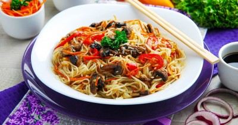

Фунчоза с грибами и овощами

Ингредиенты
- Фунчоза - 100 гр
- Шампиньоны - 300 гр
- Болгарский перец - 120 гр
- Морковь (крупного размера) - 1 шт
- Лук репчатый - 0.5 шт
- Чеснок - 1 зубч
- Соевый соус - 30 мл
- Растительное масло - 2 стол.л.
- Сахар - 0.5 чайн.л.
- Порошок имбиря - 0.5 чайн.л.
- Соус чили (по желанию) - 1 чайн.л.
Рецепт приготовления
- Как сделать фунчозу с грибами и овощами? Подготовьте необходимые ингредиенты. Я взяла шампиньоны, но подойдут любые грибы свежие или маринованные, например вешенки или сухие шиитаке. Свежие грибы нужно предварительно обжарить или отварить (в зависимости от грибов).
- Морковь очистите, промойте, обсушите бумажными полотенцами и натрите на терке по-корейски. Вы можете измельчить ее как вам больше нравится, например, натереть ее на обычной крупной терке или нарезать полукольцами или соломкой.
- Лук очистите от шелухи, промойте холодной водой. Нарежьте тонкими полукольцами или квадратиками.
- Лук очистите от шелухи, промойте холодной водой. Нарежьте тонкими полукольцами или квадратиками.
- Болгарский перец я взяла разноцветный, так блюдо будет более красочным. Помойте его, разрежьте пополам, удалите семена. Нарежьте тоненькими полосочками. Очищенный зубчик чеснока измельчите ножом или пропустите через пресс.
- Грибы помойте и обсушите бумажными полотенцами от лишней влаги. Нарежьте крупными ломтиками.
- На сковороде разогрейте рафинированное растительное масло. Выложите грибы и обжарьте, помешивая до зарумянивания.
- На отдельной сковороде разогреваем растительное масло, выкладываем измельченный лук и обжариваем до прозрачности при постоянном помешивании.
- Добавляем к луку морковь и болгарский перец. Продолжаем обжаривание, помешивая. Овощи должны стать немного мягкими, но оставаться хрустящими.
- В сковороду к овощам выкладываем обжаренные грибы. Перемешиваем.
- Вливаем соевый соус, добавляем сахар и порошок имбиря и измельченный чеснок. По желанию можете добавить чайную ложку сладкого соуса чили. Хорошо перемешайте.
- Как приготовить фунчозу? Налейте в кастрюлю фильтрованную воду примерно 1 литр (читайте инструкцию по приготовлению на упаковке), так как от качества воды будет зависеть и вкус блюда. Поставьте на огонь.
- Когда вода закипит, отправьте в кастрюлю фунчозу. Накройте крышкой и настаивайте 10-15 минут.
- Слейте фунчозу на дуршлаг, промойте холодной кипяченной водой и нарежьте кухонными ножницами.
- Переложите фунчозу в емкость подходящего размера, добавьте овощную массу с грибами и перемешайте. Блюдо готово!
- Фунчозу с грибами и овощами перед подачей посыпьте кунжутом, измельченной зеленью по вкусу. Приятного аппетита!
Вернуться к списку блюд